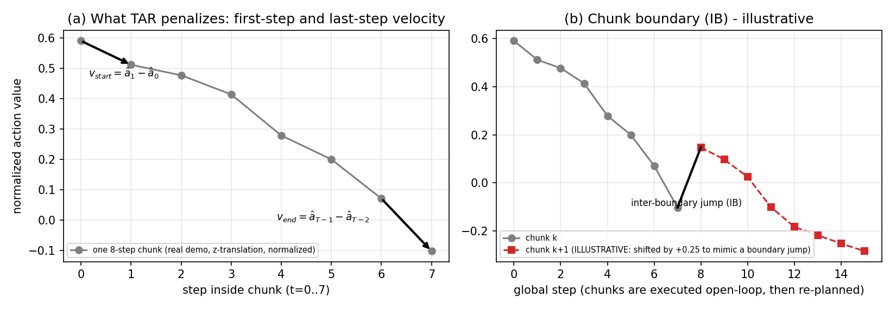
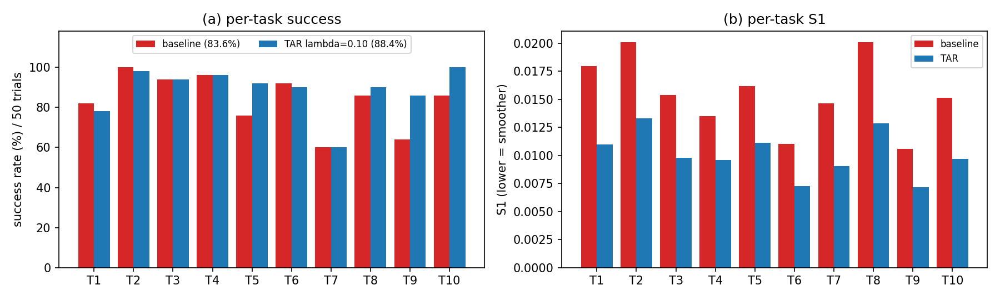
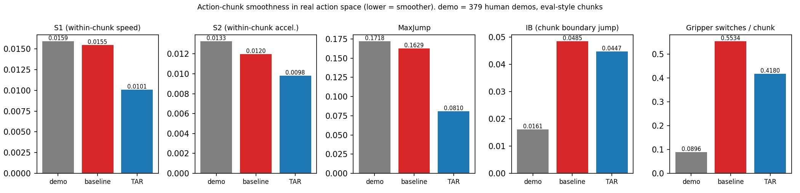

TAR: Temporal Action Regularization for Smooth Action Chunking in Vision-Language-Action Models
Training-time boundary-velocity regularization for chunk-based VLAs — no architecture change, zero inference overhead
Motivation
Modern VLAs predict T = 8 future actions per forward pass (action chunking). On LIBERO-10, the official BitVLA long-horizon fine-tune reaches 86.4% success but shows systematic chunk-boundary discontinuities.
Goal: encourage smooth hand-offs between independently predicted chunks without temporal ensembling at deployment.
Method — Temporal Action Regularization (TAR)
Given predicted chunk â ∈ ℝB×T×D (T = 8, D = 7 end-effector dims + gripper), augment L1 regression:
ℒTAR = (1/BD) Σb,d ( |âb,1,d − âb,0,d| + |âb,T−1,d − âb,T−2,d| )
Intuition: each chunk should start slowly and end slowly, so the next chunk meets a compatible velocity. Only boundary steps are penalized — interior fast motions remain expressible.

Setup
- Base model: BitVLA (bf16) from
bitvla-bf16 - Benchmark: LIBERO-10 (
libero_10_no_noops) - Training: full fine-tune, 10,001 steps, 4× RTX 4090D (FSDP)
- Eval: 500 episodes per checkpoint; smoothness from logged actions
- Ablations: λTAR ∈ {0, 0.01, 0.05, 0.10}
Metrics
Success rate ↑ · S1, MaxJump, InterBoundary, gripper switches ↓
Main Results (λ ablation)
| λTAR | Success | Δ vs baseline | S1 ↓ | MaxJump ↓ | InterBoundary ↓ |
|---|---|---|---|---|---|
| 0.00 | 86.4% | — | 0.0154 | 0.1613 | 0.0477 |
| 0.01 | 89.0% | +2.6 pp | 0.0111 | 0.0844 | 0.0421 |
| 0.05 | 90.8% | +4.4 pp | 0.0104 | 0.0794 | 0.0451 |
| 0.10 | 93.6% | +7.2 pp | 0.0099 | 0.0761 | 0.0460 |
Relative to baseline at λ = 0.10: S1 −36%, MaxJump −53%, gripper switches −24%. Success improves monotonically with λ in {0, 0.01, 0.05, 0.10}.


Takeaways
- Problem: chunk boundaries dominate motion discontinuities despite good intra-chunk predictions.
- Fix: lightweight boundary-velocity regularizer; plug-in for any chunk-based VLA trainer.
- Evidence: +7.2 pp success on LIBERO-10 with BitVLA; broad smoothness gains.
- Insight: stronger λ can act as implicit generalization regularization (higher train loss, best eval).
Limitations & next steps
- Single backbone / benchmark; transfer to OpenVLA-OFT, π₀, other chunk lengths T.
- Statistical replication & checkpoint release (ongoing cloud reproduce).
Code & reports: bitvla-tar/ (hnqhnq/robotic monorepo)